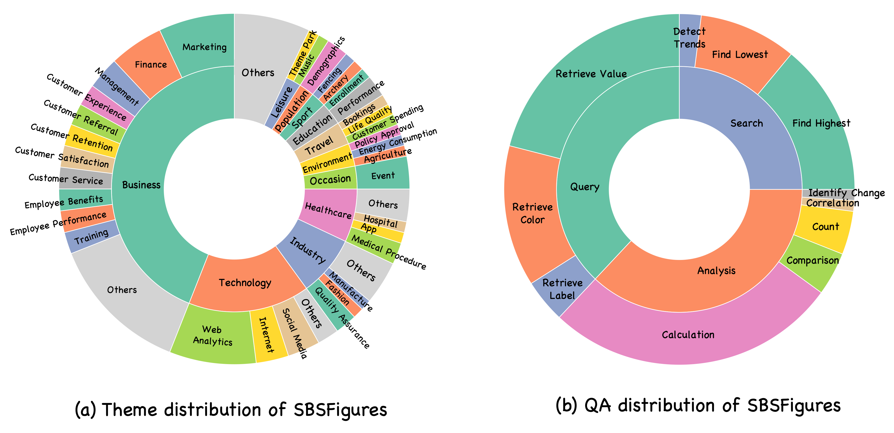
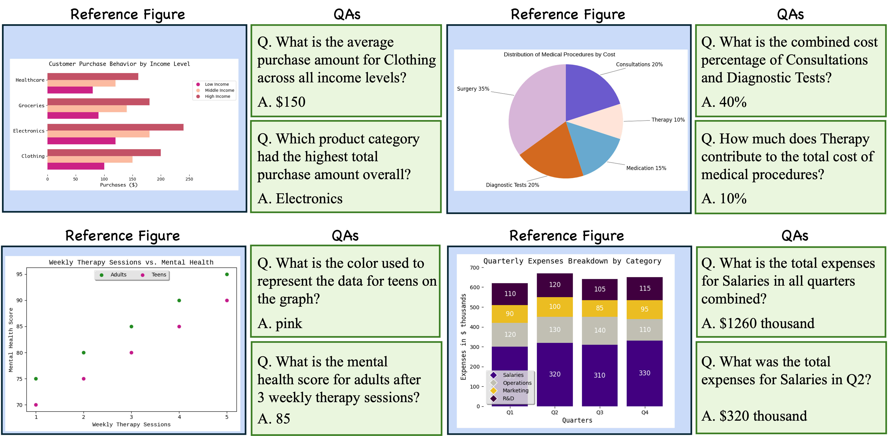

Building a large-scale figure QA dataset requires a considerable amount of work, from gathering and selecting figures to extracting attributes like text, numbers, and colors, and generating QAs. Although recent developments in LLMs have led to efforts to synthesize figures, most of these focus primarily on QA generation. Additionally, creating figures directly using LLMs often encounters issues such as code errors, similar-looking figures, and repetitive content in figures. To address this issue, we present SBSFigures(Stage-by-Stage Synthetic Figures), a dataset for pre-training figure QA. Our proposed pipeline enables the creation of chart figures with complete annotations of the visualized data and dense QA annotations without any manual annotation process. Our stage-by-stage pipeline makes it possible to create diverse topic and appearance figures efficiently while minimizing code errors. Our SBSFigures demonstrate a strong pre-training effect, making it possible to achieve efficient training with a limited amount of real-world chart data starting from our pre-trained weights. SBSFigures and its generation code and prompt are publicly available.
Each figure represents (a) Theme distribution of SBSFigures. (b) QA distribution of SBSFigures.
The figures show diverse visual variations, with each data content containing around 2,000 combinations of visual components. Additionally, our pipeline generates dense and precise QA pairs, requiring complex reasoning skills to address the questions.
SBSFigures shows a strong pre-training effect. We show the ChartQA test result on human split and augmentation (Aug.) split. (Table1) SBSFigures show a superior pre-training effect compared to other synthetic datasets. (Table2) SBSFgire shows the pre-training effect on both Donut and Pix2Srtruct models.
(Table8) Our SBSFigures shows a strong pre-training effect on multiple dataset dine-tuning. (Table9) Starting with SBSFigures pre-training proves to be effective for training figure QA models. This suggests that pre-training with SBSFigures can efficiently enhance the performance of existing figure QA models.
You can download our SBS Figures dataset (1M figures, 4.2M QA pairs) from Hugging Face: Hugging Face Dataset. Our code also allows you to generate as many figures as you want by running a single bash script. Please refer to our GitHub repository.
@article{shinoda2024sbsfigurespretrainingfigure,
title={SBS Figures: Pre-training Figure QA from Stage-by-Stage Synthesized Images},
author={Risa Shinoda and Kuniaki Saito and Shohei Tanaka and Tosho Hirasawa and Yoshitaka Ushiku},
year={2024},
journal={arXiv preprint arXiv:2412.17606},
url={https://arxiv.org/abs/2412.17606}
}
This work was supported by JST Moonshot R&D Program,Grant Number JPMJMS2236.